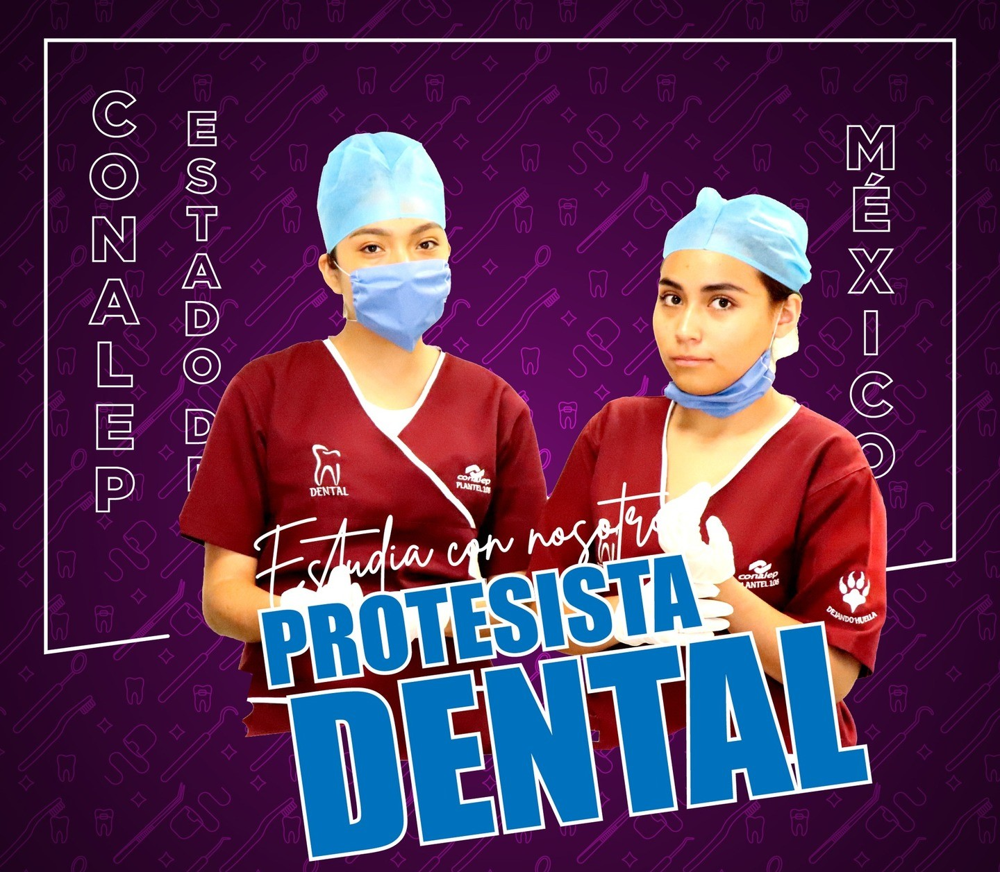
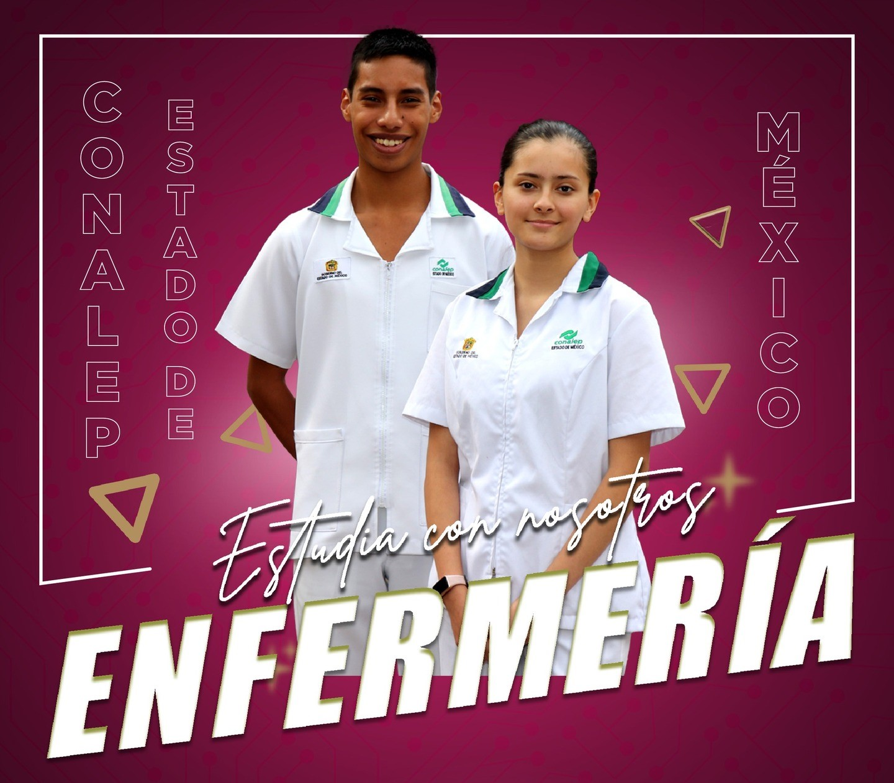

Nuestras Carreras Técnicas
Conoce la oferta educativa del CONALEP Plantel Temoaya orientada a la formación técnica profesional de excelencia.

Asistente y Protesista Dental
Forma profesionales para asistir al odontólogo, elaborar prótesis dentales y aplicar normas de bioseguridad, preparándote para el sector salud y la educación superior.
Competencias Profesionales:
- Asistir al odontólogo en procedimientos clínicos.
- Preparar y manipular materiales dentales.
- Elaborar y reparar prótesis dentales.
- Aplicar normas de higiene y bioseguridad.
- Gestionar el equipo y materiales del consultorio.

Contabilidad
Capacita para registrar operaciones contables, elaborar estados financieros, calcular impuestos y gestionar nóminas, ofreciendo una sólida base para el mercado laboral y estudios avanzados.
Competencias Profesionales:
- Registrar operaciones contables.
- Elaborar estados financieros.
- Calcular y presentar impuestos.
- Gestionar nóminas y recursos financieros.
- Realizar auditorías internas.

Enfermería General
Forma profesionales para brindar atención de enfermería de calidad, promoviendo la salud y previniendo enfermedades, capacitándote en procedimientos, administración de medicamentos y educación para la salud.
Competencias Profesionales:
- Brindar cuidados de enfermería fundamentales y especializados.
- Administrar medicamentos de forma segura y efectiva.
- Participar en la prevención y control de infecciones.
- Educar a individuos y comunidades sobre hábitos saludables.
- Colaborar en la gestión de servicios de salud.